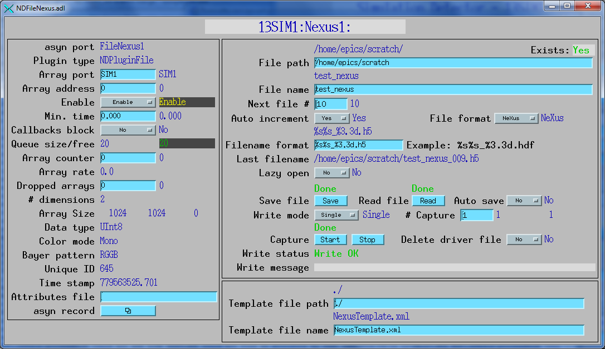

A plugin to write NeXus files was written by John Hammonds from the APS. NeXus is a standard format for x-ray and neutron data based on HDF. This is a very general file format, capable of storing any type of array data and meta-data.
The NDFileNexus class documentation describes this class in detail.
The NDFileNexus plugin is created with the NDFileNexusConfigure command, either from C/C++ or from the EPICS IOC shell.
NDFileNexusConfigure (const char *portName, int queueSize, int blockingCallbacks,
const char *NDArrayPort, int NDArrayAddr, size_t maxMemory,
int priority, int stackSize)
For details on the meaning of the parameters to this function refer to the detailed documentation on the NDFileNexusConfigure function in the NDFileNexus.cpp documentation and in the documentation for the constructor for the NDFileNexus class.
NDFileNeXus uses 2 additional parameters to define the location of an XML file that is read to determine the contents of the NeXus files written by this plugin. These are described in the following table.
| Parameter Definitions in NDFileNexus.h and EPICS Record Definitions in NDFileNexus.template | ||||||
| Parameter index variable | asyn interface | Access | Description | drvInfo string | EPICS record name | EPICS record type |
|---|---|---|---|---|---|---|
| Location of XML file to configure NeXus file contents | ||||||
| NDFileNexusTemplatePath | asynOctet | r/w | Path to XML template file | TEMPLATE_FILE_PATH |
$(P)$(R)TemplateFilePath $(P)$(R)TemplateFilePath_RBV |
waveform waveform |
| NDFileNexusTemplateFile | asynOctet | r/w | Name of XML template file | TEMPLATE_FILE_NAME |
$(P)$(R)TemplateFileName $(P)$(R)TemplateFileName_RBV |
waveform waveform |
There is currently no documentation on the contents of the XML template file. However, there are example XML template files in the iocSimDetector and iocPerkinElmer directories. Documentation on the XML file contents will be written ASAP. It is possible to validate most of the syntax in a NeXus template XML file. For example, the command (starting from the iocBoot directory) to validate the syntax of the iocBoot/iocSimDetector/NexusTemplate.xml file is:
xmllint --noout --schematron ./template.sch iocSimDetector/NexusTemplate.xml
The prebuilt Linux libraries libhdf5.a and libNeXus.a are built with HDF5 1.6.9. When they are built with the latest version, 1.8.2, they require GLIBC version 2.7 or higher, i.e. /lib/libc-2.7.so or higher. Since users may want to install areaDetector on older Linux systems (which predate Fedora Core 8 for example), it was decided to use this older version of HDF5. Future releases of areaDetector may use HDF5 1.8.2 or later, and hence not work with older Linux systems.
